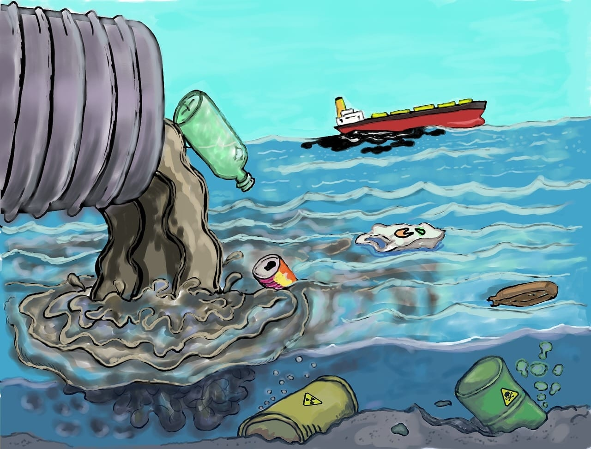
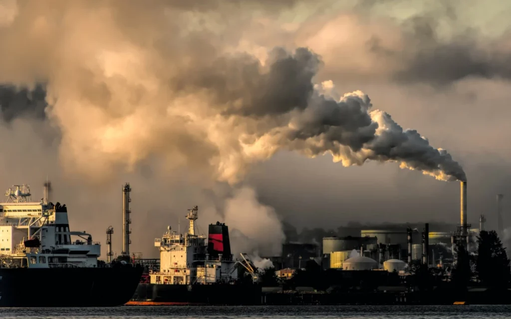
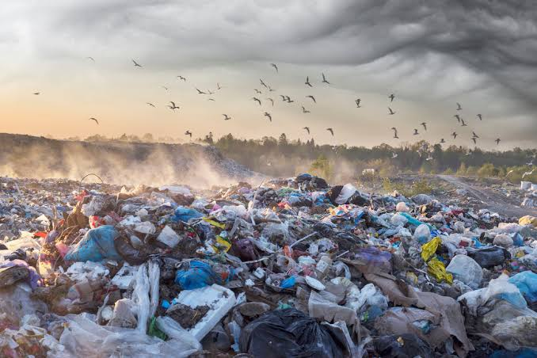

Portect the environment
Air and water pollution continue to harm ecosystems, wildlife, and human health across the world. Contaminated water sources and poor air quality contribute to serious diseases and environmental damage. By reducing waste, using cleaner energy sources, and supporting environmental protection efforts, we can help create a cleaner, healthier, and more sustainable future for everyone. Together, our actions can make a real difference in protecting the planet for future generations.
Learn more
Water Pollution
Water pollution is one of the biggest environmental problems in the world. It happens when harmful substances such as plastic, chemicals, and waste enter rivers, lakes, oceans, and other water sources. Polluted water can harm plants, animals, and humans by spreading diseases and damaging ecosystems To reduce water pollution, people should dispose of waste properly, recycle materials, and avoid dumping harmful substances into waterways. Protecting our water is important for a healthy environment and future generations.

Air Pollution
Air pollution is the contamination of the air by harmful substances such as smoke, dust, and gases. It is mainly caused by vehicles, factories, and the burning of fossil fuels. Air pollution can harm human health, causing breathing problems and other diseases. It also damages the environment by contributing to climate change and harming plants and animals. Reducing emissions and using cleaner energy sources can help improve air quality and protect the planet

Plastic Pollution
Plastic pollution is one of the biggest environmental problems in the world. It occurs when plastic waste is discarded improperly and accumulates in nature, including oceans, rivers, and land. Plastic can take hundreds of years to decompose, harming wildlife and ecosystems. Many animals mistake plastic for food, which can lead to injury or death. Reducing the use of single-use plastics, recycling, and properly disposing of waste can help decrease plastic pollution and protect the environment for future generations.
